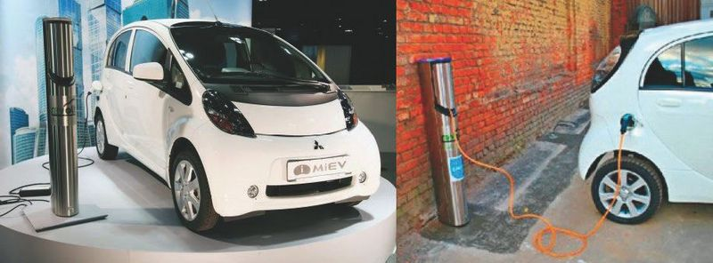
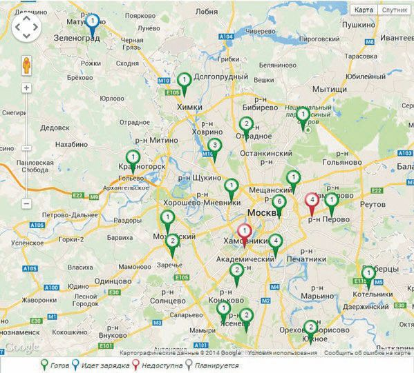
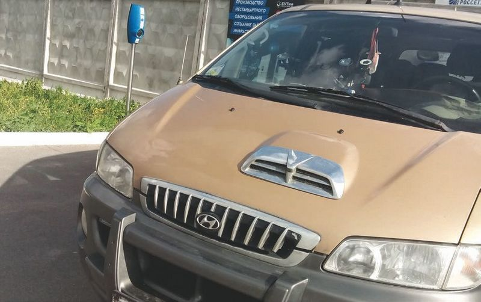
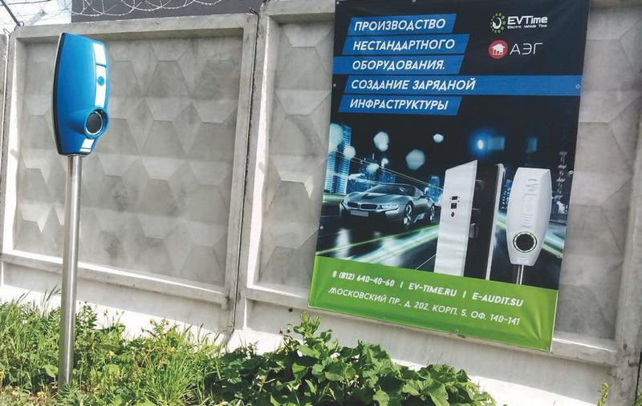
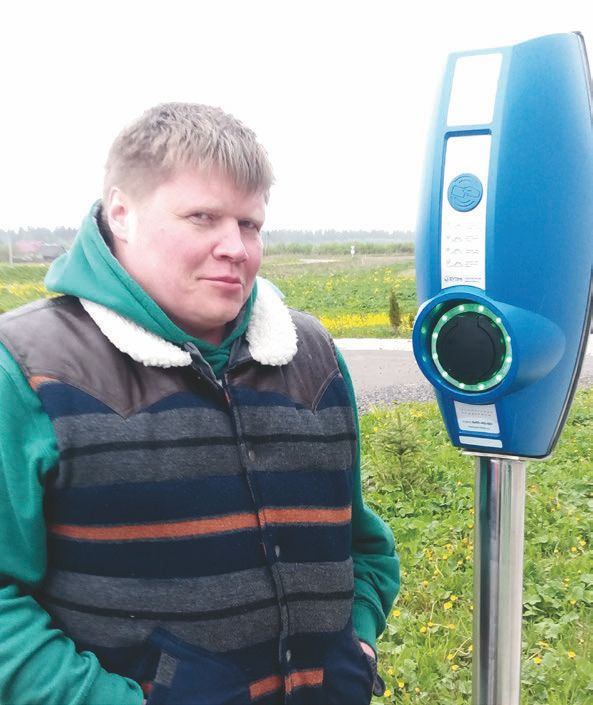
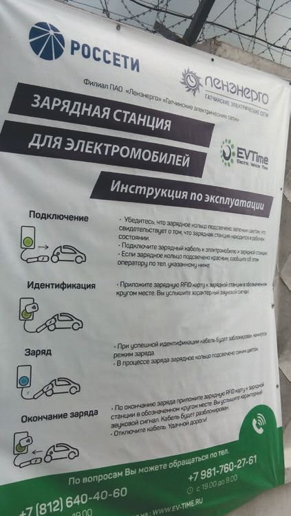
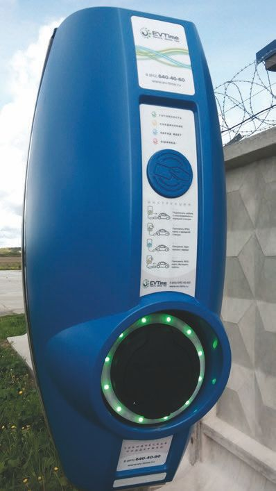
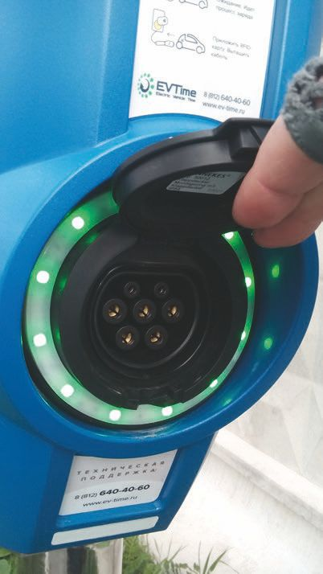

Зарядные сети и станции.
Важную роль в «продвижении» электромобилей в России играет внедрение соответствующей зарядной инфраструктуры – зарядных станций (в обиходе их часто называют «электрическими заправками»).
Несмотря на то что зарядить электромобиль можно от обычной розетки, как правило, за 7–8 часов, это время часто является неприемлемым. На станции экспресс-зарядки электромобиль можно подзарядить за полчаса-час, что существенно быстрее. Создание подобной сети зарядных станций делает электромобиль столь же удобным, как автомобиль с ДВС.
Зарядная станция Ensto EVC 100 фирмы Revolta представлена на рис. 1.14.

Рис. 1.14. Внешний вид зарядной станции Ensto EVC 100
Фирмой Revolta была заявлена задача космического масштаба – создание сети электрозаправок для электромобилей на 2000 зарядных станций. Они должны были появиться в Москве, Санкт-Петербурге, Краснодаре, Самаре и Калуге, а также в других городах.
Обратим внимание и на электронное устройство iWallbox, оно представляет собой усовершенствованное зарядное устройство BMW, представляющее отличную альтернативу бытовым розеткам. С его помощью станет возможным сократить время подзарядки новинок до трех часов. Цена – 70 000 руб. Приобрести его можно в фирменных магазинах, дилерской сети.
1.10.1. Где зарядить электромобиль в Москве, Санкт-Петербурге и других мегаполисахГде зарядить электромобиль в Москве
Наиболее активно станции подзарядки электромобилей эксплуатируются в Москве, там же создана и первая полноценная сеть зарядных станций. Действительно, основной проблемой является ограниченный запас хода. Относительно недорогие Nissan Leaf и Mitsubishi i-MiEV проезжают без подзарядки от 150 до 200 км. В городских условиях это приемлемо, а вот при выезде за МКАД водителя поджидают серьезные неприятности. Автолюбителю придется искать розетку и несколько часов заряжать батареи. Таким образом, в большинстве российских регионов инфраструктуры для обслуживания электромобилей пока нет.
Компания МОЭСК совместно с компанией Revolta закончила первый этап электрификации московских дорог, установив 28 зарядных станций в столице. По состоянию на июнь 2017 года в Москве и Московской области уже имеются зарядные станции этой сети, которые можно идентифицировать в соответствии с картой, приведенной на рис. 1.15.

Рис. 1.15. Карта электрозаправок для электромобилей на территории Московской области
Теперь зарядить электромобиль в мегаполисе можно по следующим адресам:
• улица Садовническая 36, стр. 1 (5 зарядных станций напольного монтажа, в том числе 4 станции зарядки переменным током, 1 станция быстрой зарядки постоянным током);
• улица Голубинская 10;
• улица Нижняя Красносельская 6, стр. 1;
• улица Горбунова 14;
• Ярославское шоссе 31;
• Алтуфьевское шоссе 31, стр. 1;
• улица Перовская 1 (установлены по 1 станции зарядки переменным током напольного монтажа);
• шоссе Энтузиастов 12, к. 2 (2 станции зарядки переменным током настенного монтажа);
• Зеленоград, Солнечная аллея 1;
• Котельники, 1-й Покровский пр. 6 (1 станция зарядки переменным током напольного монтажа);
• Одинцовский район, «Сколково», ул. Новая 100 (2 станции зарядки переменным током напольного монтажа).
Станции с помощью специального программного обеспечения объединены в единую информационную сеть, что позволяет управлять электрозаправками из единого центра. «Зарядиться» можно, только имея при себе электронную RFID-карту.
Где подзарядиться в Санкт-Петербурге
На рис. 1.16 представлен электромобиль Hyundai у стационарной зарядки в Ленинградской области. Чтобы полностью зарядить данный электромобиль, потребуется около 8 часов.
Внимание, важно!
Несмотря на существующие мнения скептиков относительно того, что электромобили ведут себя на холоде непредсказуемо, последние модели хорошо переносят мороз. Дело в том, что сейчас используются литий-ионные аккумуляторы, которые выдерживают температуру и до -15 °C. При -15…25 °C их производительность падает на 20 %. При -25…50 °C электромобиль нужно заряжать в 2 раза чаще обычного. А вот при температуре ниже -50 °C он и вовсе может не завестись.

Рис. 1.16. Зарядный терминал в Ленинградской области
Созданием зарядной инфраструктуры в Петербурге и Ленинградской области занимаются энергетические компании, подробности работы которых, равно как и полный список зарядок с указанием их адресов, можно получить на сайтах www.ev-time.ru и www.e-audit.su.
В Петербурге и Ленинградской области это полтора десятка действующих электрозаправок, и выглядят они так, как показано на рис. 1.17.

Рис. 1.17. Внешний вид одной из заправочных станций для электромобиля
На рис. 1.18 представлен вид на терминал зарядной станции. Почти у каждого терминала вы найдете подробную инструкцию по правилам действия, она представлена на рис. 1.19. Автор советует читать инструкцию перед зарядкой автомобиля и обращать внимание на разъем зарядной станции.

Рис. 1.18. Внешний вид терминала зарядной станции

Рис. 1.19. Инструкция по пользованию терминалом для зарядки электромобилей
На рис. 1.20 представлен терминал с близкого расстояния.
На рис. 1.21 представлен вид на семиконтактный разъем для зарядки с помощью терминала.

Рис. 1.20. Зарядный электротерминал вблизи

Рис. 1.21. Вид на семиконтактный разъем для зарядки электромобиля с помощью терминала
1.10.2. Зарядные устройства и адаптерыБольшинство владельцев электромобилей подзаряжает свои авто с помощью специальных зарядных устройств на дому, на зарядных станциях, к примеру Super Chargers, или на станциях Destination Chargers, находясь в многозвездочном отеле. Но самым удобным способом, пожалуй, будет просто воспользоваться обычной электрической розеткой. Другое дело, что для подзарядки автомобиля необходимо оборудование.
К примеру, компания Tesla производит разъемы-переходники NEMA 14–30 для электрокаров Model S и Model X. Теперь автовладельцы электромобилей могут использовать весьма распространенные и мощные розетки для подзарядки автомобиля. За один час зарядки с помощью устройства NEMA 14–30 серийные электрокары Model S и Model X смогут проехать около 24–27 км.
Для зарядки от стационарной сети необходимо использование фирменного зарядного кабеля Mobile Connector.
Большинство зарядных терминалов работает в автономном режиме – без оператора. Правила пользования стационарным зарядным устройством, установленным на улице, несложны. Вы убеждаетесь в том, что терминал исправен и готов к обслуживанию. Об этом свидетельствует зеленый цвет свечения индикаторов на терминале. Открываете заглушку разъема на терминале и соединяете кабелем ваш электромобиль и зарядный терминал. Затем прикладываете бесконтактную карту с положительным балансом денежных средств к считывателю устройства. Кабель блокируется (вынуть его после этого невозможно без принудительной отмены операции по зарядке), и начинается зарядка электромобиля. Это сопровождается звуковым сигналом. При этом свечение терминала меняется на синее.
После окончания зарядки свечение снова меняется на зеленое (также сопровождается звуковым сигналом), вы подносите смарт-карту, и кабель разблокируется (звуковой сигнал), теперь можно разъединить соединение и отъезжать – ваш автомобиль заправлен.
При возникновении спорных вопросов необходимо обратиться в справочную службу терминалов сети, телефон которой указан тут же.